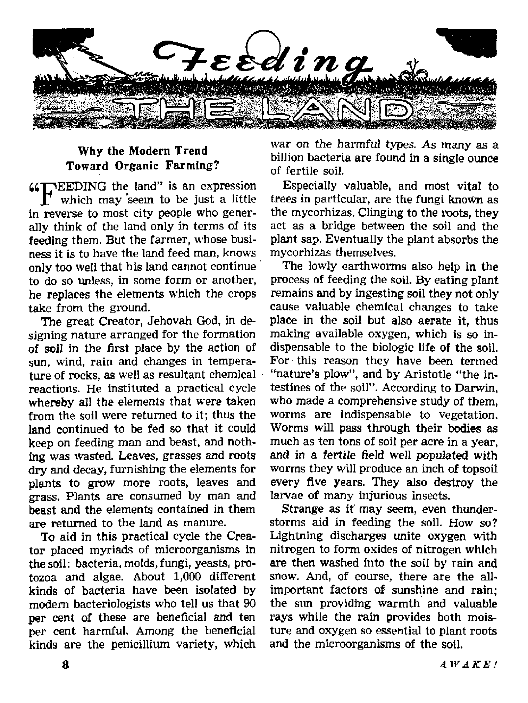
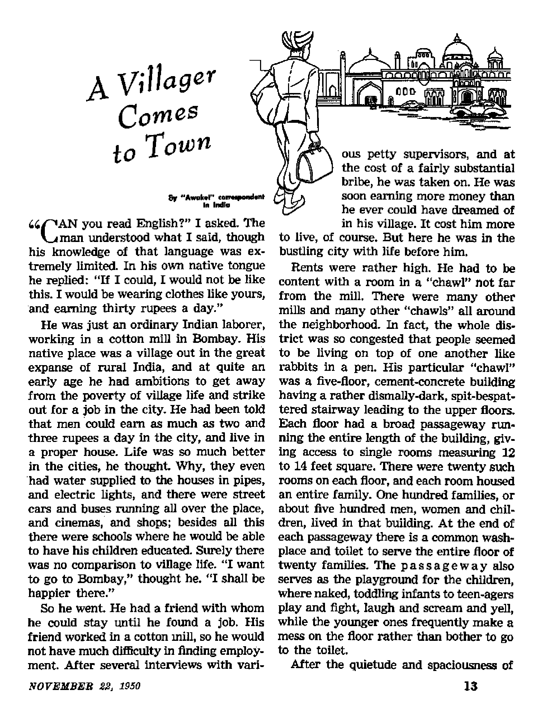

REE HANDS TERRORIZE THE PHILIPPINES
Feeding the Land
Escaping the Tax Burden
Ensnared by a Pagan Madonna

THE MISSION OF THIS JOURNAL
News sources that are able to keep you awake to the vital Issues of cur times must be unfettered by censorship and selfish interests, “Awake!” has no fetters- It recognizes facts, faces facts, is free to publish facts. It is not bound by political ambitions or obligations; it is unhampered by advertiserfl whose toes must not be trodden on; it Is unprejudiced by traditional creeds. This journal keeps itself free that it may speak freely to you, But it does not abuse its freedom. It maintains integrity to truth,
“Awake!” uses the regular news channels, but Is not dcoendent on them. Its own correspondents are on all continents, in scores of nations, From the four comers of the earth their uncensored, on-the-scenes reports come to you through these columns. This journal's viewpoint is net narrow, but is international It is read In many nations, in many languages, by persons of all ages. Through its pages many fields of knowledge pass in review—government, commerce, religion, history, geography* science, social conditions, natural wonders—why, its cover* age is as broad as the earth and as high as the heavens,
*■ Awake JTT pledges itself to righteous principles, to exposing hidden foes and subtle dangers. championing freedom for all, to comforting mourners and strengthening those disheartened by the failures cf a delinquent world, reflecting sure hope for the establishment of a right* eous New World.
Get acquainted with "Awake!11 Keep awake by reading "Awake!”
]h'BLbflJlD JJjOMTFFLT Hl
WATCHTOWER BIBLE AND TRACT BOGIE TF. JNC.
117 Adams Street Brooklyn, N.Y., U.S.A.
N. 11. Published C. H. List, Senin, frrrttary
Printing this 810,000 Five conta a copy
L>iii>*v* I* riilih thk bwwJm li aiiiliM: StisLrirfr.My ■ F-p 4n2.fi
lj--VnMirBr L’tnhL Frr-'t. Umi, '-*tdkF. Lkr<nHi
Yu'lj Aik
Awiea, C,A, 1.7 AiUTM Si .. 1. NY. 11
Arstrjill, .2 Rtft&ftrd Rd.. £;ri(b|k;rl. N A.W. f* Cm* la. 40 2ri<b Tucrtc SP Gcurto 11 l_r*|lMtd, !>4 (Tivi Irri'MV. Lmrvn #. 2 Ek
Shi* Afrit*, B^toc Hoar T.-nn M
Rmlttiinm be writ is li /w ci>;ep irj tr e«Ft^i*nev wi*k i*rtl*l:nt* u> n'c ft r?3»vu^s* vp it
lr*T-o<lj-n uh* ■■ co Ct t> JacvaI,
O Htertut' j:.I flr.lcr j
f»'jM la 13 <™: m he* »(*ud hi kixJ
cjTfMj Ntlic* *f iwitb rr*pvii b^k)
U "Wil at Wit (.<» tail?* aj^rripder ■ CMM* *t ilftm »h?;i seni to <w tffrr rv.v *►? ^\D«tari rfrrlbf vttiL, ocf neg th. flrad
Cj4 aft » CfT
*t MftsoJ-rJiM a; Br^E/o h. T, Ad of >1*^. < „ IMrted kl V, ff. A.
CONTENTS
Red Hands Terrorize the Philippines
Government Inability to Combat Huks R
Organic vs, Commercial TertLlzers
Tne Commercial Fertilizer Racket
"Ifour Word Is Truth”
^"Now it is high time to awake.— Romans 13:11 Qj
Volume XXXI Brooklyn, N. Y., November 22, 1950 Number 22
Red Hands Terrorize the Philippines
By “Awake!" correspondent in the Philippines
LIKE the first shot of the American Revolution fired at Concord, Massachusetts, which shot, it is said, “was heard round the world,” so was the “first cry at Balintawak” This cry of a downtrodden and oppressed people, ready for revolution, was heard throughout the Philippines.
From where now stands a huge monument to its memory, in Caloocan, province of Rizal, on the northern outskirts of Manila, came this cry, a loud and determined cry for relief, for freedom. This cry was the final bursting of a swollen sore that had been aggravated through more than three hundred years of tyranny by Spanish friars and conquistadores.
Here on August 26 (some say the 23d), 1896, the “first cry at Balintawak”, the cry “long live the Philippines and long live the Katipunan”, went up from a few hundred throats. A revolution was under way and it was backed by little other than the fired determination of a beaten people to rise and fight back. With two revolvers, two hundred bolos, and many bamboo spears it started, and soon was over, with freedom from Spanish tyranny assured. Two years later Dewey’s victories in Manila bay ended the Spanish domination of the islands and freed the revolting Filipinos as well. Although many at first thought that freedom had escaped them and left them in further subjection, this time to the United States, their continued revolt against Uncle Sam was soon over and they realized that indeed a new life was open for them.
The seed of desired independence sprouted well under democratic teachings and American resources, and on July 4, 1946, it burst into full bloom as the baby Republic of the Philippines.
Four hundred years of history written in blood and tears should now, it seems, be closed with the ending, “they lived happily ever after.” But not so. Instead a new chapter begins. Turn to the front page of the Manila Times of Sunday, August 27, 1950, and there you will find that another horror, another nightmare, has been recorded in blood on the pages of Filipino history.
Tragedy struck while government officials were delivering to expectant audiences flowery speeches on patriotic matters of freedom and unity in celebration of the 54th anniversary of the “first cry at Balintawak”. For hardly had the ringing words of the Philippine president, Elpi-dio Quirino, and the United Nations General Assembly president, Carlos P. Romulo, died out of the ears of the common people when the startling cry of the newsboys blared the headlines of devilish raids on many towns by lawless dissidents. Raids ending in burned homes, rape, in loss of
much life, in stealing and in general tragedy. In the face of this, the “first cry at Balintawak” becomes hollow and insignificant and freedom seems useless, for freedom without peace and with fear is not freedom at all.
How ironic that these raiders who snuff out the lives of those who desire freedom, who burn the homed once stoutly defended, who steal the crops so laboriously planted, should use as their battle cry the same “first cry at Balintawak”, “Long live the Philippines and long live the Katipunan.”
Beastly Outrages
With aching heart and much perplexity one continues with the details: “Tarlac, Tarlac laid waste,” it reads; many killed and many homeless. Property destroyed, valuables stolen, precious food carried away. But even this is not all. The final column tells of the army hospital at Camp Makabulos being raided; of how the patients, many too weak to raise their arms in protest, were shot in their beds; of others who in frantic fear crawled under the beds and were prodded out by bullets and bayoneted; of doctors who fought futilely to save patients only to be shot themselves; of nurses ravished, then killed; and of the final burning of the hospital over its dead and dying. How terrible!
Santa Cruz, Laguna, suffered heavy losses in property and many lives were lost, with officials being the special targets; money, office equipment and medicine stolen. The prisoners of the provincial jail were also freed and used as porters to carry away the loot. Previously the town had been surrounded and all communications cut.
At Arayat, Pampanga, the same story; also at San Rafael, Bulacan. Smaller raids were felt in other towns, with always the same pattern. In some instances, too, buses have been stopped and passengers robbed and any who resisted were shot. Individual homes, too, were not safe.
Where were the police? What about the army? These questions many wish answered. They were around, many times outnumbered. Often they were surprised and made prisoners and sometimes killed. In a few instances, conveniently for the enemy, they were unexplainably absent. But even when present and alerted, fighting such an enemy as this is difficult. It is difficult to fight shadows; and as shadows the dissidents often seem, appearing from nowhere and returning as quietly. Dressed as any others of the town, cleverly they infiltrate into the towns and live side by side with those they would later massacre.
Note the raid of Tarlac, which started at 7;30 pm., before it was quite dark. No one was seen sneaking into town from the river’s edge or the bush of the countryside, but at the given signal to attack they were there, maybe as many as 1,500. Obviously they were mingled with the townsfolk up to the very set time for the attack. In fact, as some reported, many familiar faces were among the raiding party and even one local barrio leader was noticed leading a section of the attacking party. Afterward, with a set whistle signal, they quietly and hurriedly melted into the darkness. Fearing ambush, seldom did law forces follow until reinforced, by which time, of course, the darkness and heavy undergrowth had swallowed up the attackers. It is true such an enemy is hard to fight.
“What hands slaughtered these sick men in the army hospital at Camp Makabulos and the unarmed men and women elsewhere? What hands set the torch to the homes?” asked the president of the Philippines in his Wednesday night fireside chat to the nation. “They were not the hands of an alien invader,” he reminded, “and regardless of the power behind them, they
were hands we should be gripping in brotherhood but could not” Thus it is intimated that the Philippines is involved in civil war and the hand of each Filipino is raised against that of his brother Filipino. How sad! How tragic! How useless!
Hands Doubly Red
These hands, so cruel, are red hands, not just red with blood, but hands backed up with weapons, wealth and words by Red communism. Misguided and misinformed outlaws known as Huks. A dissident army formed at first by a disgruntled and dissatisfied politician, a Filipino Robin Hood, a villainous hero like America’s Jesse James. But this army of the people for freedom in the Philippines, called properly the Hukbalahaps in native dialect, has now become the seedbed for the Red hordes of communism. They spread leaflets and posters attacking the government, referring to them as tools of the imperialists from America. They also spread the virtues of the communistic rule and in conclusion sign themselves, “Central Committee of the Communist Party of the Philippines.”
The government has not been asleep to their activities and has weakly tried to hold back the Red waves, but the Huk methods are difficult to deal with in this land of much brush, rocks and tall waving grass. The enemy has ever held the advantage in knowing the land and its hiding places and in being able to establish ambuscades. Then too the unsettled economic conditions here have made it easy to persuade the common folk to the Huk way of thinking. Finally, it is reported, not all the army and police are 100 per cent against the Huks and 100 per cent for the government. Thus loopholes are present, affording channels of information and providing means for rapid attack and escape for the Huks.
One step to overcome the police and army shortage has been the establishing of local temporary police, called IP's. These have helped, but also they have caused additional headaches. Given too much power these green and untrained men with guns often go “berserk” and beat up and shoot any who cross them or whom they might have previously considered enemies. They too often will accost someone against whom they hold a grudge, taunt him into violence or hard words and then either shoot him or beat him until, often, he dies afterward.
The most notorious incident involving the TP's was the charge made by Senator Pablo Angeles David that on Maundy Thursday, April 6, 1950, eighty residents of barrio Maliwalo, town of Bacolor, province of Pampanga, were massacred by the temporary police in retaliation for the murder of their commander while he was praying in church about a week previously. The next day after the massacre the TP's were reported to have returned and burned barrio Maliwalo to the ground. Governor Jose B. Lingad, of the province of Pampanga, vigorously denied the charge, but Senator David demanded an investigation and got it A group of senators visited the scene and found Maliwalo burned to the ground and a lot of the former male residents missing. Where were they? “Massacred,” said the survivors. “No,” said the TP’s and constabulary officers. Then where were they? They haven’t been seen to this day.
If one innocent civilian died in this massacre it is still wrong and explains why people don’t support the government 100 per cent. With this also are the facts that the TP’s and Philippine Constabulary (a group like United States National Guard and State Police) visit from house to house and force from the people as “protection” pay, rice, money and entertainment; if they refuse
to pay, many strange things happen, so fear drives the people to pay whether able or not. At sundown these same people often find the Huks doing house-to-house work for food, clothing and money, or else , t t thus the slogan: “The PC rules by day and the Huks by night/' at the poor peoples' expense.
Of course the government has been busy; being untried and inexperienced it has had economic troubles, labor problems, financial ills, low wages and high living, too much crime, graft, and the Huks, All this and a serious lack of capable public servants to properly handle such things.
National leaders, who should have been busy solving the ills of the country in a unified way, have instead spent much time hurling accusations back and forth like little boys throwing stones. For example, at a recent banquet held by the Lions’ Club, the president of the Philippines, a leading senator and the defeated rival of the president in the recent elections were present as the speakers of the night Few expected the fireworks that followed. First the senator spoke for well over an hour lambasting the president and his family. He accused the president of being the foremost exponent of graft in the Philippine government.
Then came the defeated candidate of the past elections, a bitter rival of the president at all times. He, a more tactful man, as the newspapers put it, slapped the president right and left, but with "the velvet glove" of a tactful diplomat. One statement with the glove off was "this government is run worse than hell".
Finally, after two hours and a half of roasting, the president's turn came and he opened with an angry broken voice challenging anyone to prove that he or any of his family profited in any way even one centavo from crooked deals. He said: "I’ll give them my life If they can prove it/1 At this point the senator jumped to his feet and loudly accepted the challenge. The president then admitted he was weak and asked the people to hold him up, and a hectic night ended with the Filipino dignitaries who attended the 15 to 50 peso-a-plate dinner wondering what the American officials and diplomats thought.
A few days before, the president had been at loggerheads with the speaker of the House, over some statement he made regarding that person’s conduct and language. The speaker then squared accounts by adjourning the House without acting on the important legislation which the president had said were "must" bills. How true the saying of the wise man Solomon: “Woe to thee, O land, when thy king is a child."—Ecclesiastes 10:16,
The president here has indeed had a rough row to hoe with a “smelly” victory at the last elections, with little co-operation from his legislature and all the country’s problems, big and little. As a result, he has constantly begged for more power, only to get less. Then when the Korean war broke he declared that now he must act, power or not, and, as he puts it, “I will act now power or no and let the Supreme Court test my acts later."
Government Inability to Combat Huks
Now the president and the politicians are too busy concentrating on this new Huk horror to remember to throw mud at each other, and the nation's plight seems so sad that all have momentarily forgotten their hates and dislikes in an attempt to solve a problem which they fear might next take themselves Or their loved ones into its bloody clutches.
Though the president admits they have not enough army or funds to fight the Huks with government forces, still they have subtracted from this dangerous situation some 5,000 of the nation’s finest soldiers to be sent to Korea as the Philippines^ contribution to the United Nations’ war on communism; meanwhile the Red wave threatens to wash the sandy foundation completely from under the tottering government at home. On August 30, in one of his Wednesday night fireside chats, the president called to the people. A weak pitiful call, a cal] of desperation, of one giving Up and crawling out from under the load as much as possible to let it settle on the shoulders of others.
“I call on you,” he said, “to protect those things which are above government. Your homes, your families, the schools, the hospitals, the churches in which you worship . . . Form yourselves into battalions of peace . . . Take over the civilian guards . . . Our government is poor . . . Name your own men to disperse the enemy.”
Only a few weeks later the failure of this desperate move was acknowledged and the plan abandoned. A United Press dispatch of September 23 reported: “President Elpidio Quirino today ordered the dissolution of all semi-official police forces, such as the Civilian Guards, temporary police units and civilian volunteers recruited by the army. Mr, Quirino said the semi-official police forces had gained ‘an unsavory reputation because of abuses and the people are more scared of them than of the Huks’. From now on, the president said, enforcement of law and order would be the sole responsibility of the armed forces, the constabulary and the regular municipal police.”
This makes one recall the words of the Bible, “We looked for peace, but no good came; and for a time of health, and behold trouble!” (Jeremiah 8:15) Everywhere the prophecies stare one in the face: ‘distress and perplexity,* 'each man’s hand against Tiis neighbor,’ 'men shall hate one another,’ ‘in the last days dangerous times shall come,’ ‘the wicked shall do wickedly/
Nineteen million people are lost, confused, worried, scared to death. Where shall they turn for an answer? Where can they find what to do? Who will tell them what to do? Where can they find a solid hope?
The government admits its inability to handle the matter. The Roman Catholic Church has been here for centuries and has given nothing but a superstitious blind faith in miracles and innumerable manmade gruesome saints of wood, clay and stone. Countless medals hung uselessly around the necks pf the innocent have prevented nothing. A host of imaginary “virgins” of this and that and “Our Lady So-and-So” have accomplished nothing, but added to the confusion and ignorance which is partly responsible for the mess.
In the midst of this whirlpool of perplexity and distress and despite the hysteria that grips the majority of this Catholic country, there is seen one group who know no fear, a group that, though small in numbers, are abundant in faith and good works, a group that devote their time to preaching and teaching a message of comfort to all who desire to hear. They are faithful witnesses of Jehovah. Tirelessly they go from house to house and publicly with a tried and. proved answer to every problem that faces the people of the Philippines, an answer based solely on the Bible. They know the cause. They know the remedy. They can show you how to apply it.
Free from religious traditions and communistic Red religion, they carry to the people a real message of hope, the good news of God’s kingdom now ^established in the heavens. Soon that kingdom will rid the earth of all horrors, of ambushes and massacres, and of everything that harms.
By reason of this divinely ordained natural cycle we have our grassy plains, our shrub- and tree-covered hills and our dense forests. And though this process has been going on for hundreds, yes, thousands of years, yet, left to itself, the soil has not been impoverished* On the contrary, such “virgin soil” has a fertility that can supply man with food for many years. Truly God “made everything beautiful”.
Thousands of years ago man observed that animal waste was good for plants. Time and again his knowledge of this fact is brought to our attention in the Hebrew Scriptures, and in one of the illustrations or parables of Christ Jesus we find this knowledge emphasized in a lesson on farming by way of example. A fig tree that had not borne fruit for three years was to be cut down by its owner. However, his hired man objected, saying, “Master, let it alone. also this year, until I dig around it and put on manure; and if then it produces fruit in the future, well and good; but if not, you shall cut it down.”—Luke 13:8, 9, New World Trans,
As far back as the third century B.C., Greeks, Chinese and others knew that plowing under certain legumes helped the following crops. The use of lime and wood ashes goes back to ancient times. A tenth-century Arab treatise on the subject lists a number of fertilizers, including blood, observing that human blood was best. Old also is the use of bones, waste wool, etc. When the Pilgrims came to America they learned from the Indians to put a small fish in each hill of com they planted, to insure a good crop.
In the second quarter of the 19th cen
tury Europe’s foremost chemist, Liebig, discovered that “mineral and organic worlds were composed of the same chemical elements”. From crude experiments he concluded that humus was worthless and that all that was necessary was to supply the soil with the four chemical elements calcium, nitrogen, phosphorus and potassium, and it could continue to feed man and beast. Today, in the United States alone, farmers spend upward of a half billion dollars annually for commercial fertilizers, the cotton farmers of the South alone accounting for about half of this.
Not all farmers, however, accepted this chemical theory known as the NPK formula (N—nitrogen; P—phosphorus; K — po-tassium—from kainite). According to the Encyclopaedia Britannica, practical men in Great Britain were skeptical from the start, maintaining that stable manure was more effective than artificial fertilizers. Time bore out the correctness of their position, as plants responded less and less to commercial fertilizers as the years went by but showed no such falling off when supplied with organic fertilizers, also suffering less from seasonable factors.
Today an ever-increasing number of gardeners and farmers are turning from so-called “scientific” to “organic” methods. Some of the reasons for this trend are as follows.
Organic vs. Commercial Fertilizers
First: Commercial fertilizers are largely water-soluble. Because of this fact much of their value is bound to be leached from the soil by rain. Rain cannot wash away the valuable elements contained in organic materials* On the contrary, it helps the process whereby these are made available for plants.
Second: Commercial fertilizers tend to make the soil heavy and to pack it, thereby depriving nature’s biologic laboratory, the microorganisms and the worms, of vital oxygen and moisture. Use of organic elements aids in supplying these indispensable factors.
Third: Use of chemical fertilizers encourages the washing away of topsoil, or erosion. Organic elements help to minimize this loss, a loss which amounts to more than three billion tons of soil annually in the United States,
Fourth: Commercial fertilizers have a deleterious effect on the biologic life of the soil, the worms, the bacteria, fungi, and especially the mycorhizas, which are considered by many to be the greatest single factor in plant life. It seems that the strong salts and acids in chemical fertilizers destroy these. On the other hand, *‘organic matter in the soil,” according to Soils and Men (1938 Yearbook, U. S. Department of Agriculture), “may be considered our most valuable national resource” because of the food it furnishes to nature’s bacteria] **wrecking crews1’.
Fifth: Chemists of the early 19th century knew of only four elements in the human body (aside from those found in water: oxygen and hydrogen), namely calcium, nitrogen, phosphorus and potassium, and so concluded that only these needed to be added to the soil Today, however, according to the foregoing authority: “One by one new elements have been added to the list of those known to be necessary for plant growth and health. Some of these elements are needed in only a few parts per million of soil, yet without this trace, plants—and animals also—suffer serious diseases. This is one of the most interesting fields of modern research* in plant and animal nutrition ... It is now generally admitted that for normal development plants require the following elements in suitable compounds: carbon, hydrogen, oxygen, nitrogen, phosphorus, potassium, calcium, magnesium, sulphur, iron, manganese, boron, copper, and zinc/* To which others add barium, cobalt, lead, aluminum, etc.
Not only does the use of ordinary commercial fertilizers ignore ,the need of these secondary elements, but, “The commercial fertilizers applied to obtain larger yields are for the most part pure salts, which through the phenomenon of base exchange tend to displace the secondary elements in the soil and cause them to be used by growing crops or carried away in drainage water. These commercial fertilizers are different from farm manure in that they do not ordinarily contain enough of the secondary elements to be of any significance. It is not unreasonable to believe that some small part of the increased yield following the application of commercial fertilizers is due to the increased availability of the secondary elements than entirely to the [NPK] applied.” Which, incidentally, explains why commercial fertilizers decrease in effectiveness as the years go by.
Supplying the Trace Elements
Nor would the problem be solved as easily as it may seem merely by adding the lacking elements. What elements are lacking? Can we be certain that we have discovered all of them? Uebig, back in 1830-40, thought that it was necessary to add only four. Now we know of several additional ones, and a century from now we may know of many more.
Also, note how delicate is the matter of supplying these secondary elements: “Boron ... is unique among the chemical elements in that very small quantities are necessary for the normal growth of many if not all plants, and only slightly higher concentrations cause injury ... The actual
quantity of boron that must be supplied varies with the method of application, the season, the soil, the source of the boron and the crop* However, the quantity should be small. Considerable damage to citrus crops in California was caused by irrigation water containing more than one-half part [of boron] per million [parts of water]/’ Regarding other elements experiments have shown that plants in water solution absolutely required four parts per million for plant growth; but an increase to 20 parts per million had fatal results to many of the plants.
In view of these facts the same authority states: “While the continuous use of chemical fertilizers tends to deplete the essential elements not supplied to the soil, the use of stable manure, leafmold, and wood ashes and peat tends to conserve them. On dairy farms, a large part of all elements is returned to the soil . . . leaf litter, leaf mold, and wood ashes contain many of the elements taken from the forest soil in proportions desirable for the nourishment of the trees .. . The undesirable ones have largely been eliminated. Further, the secondary elements in leafmold, particularly manganese, are in a very available form,’*
Similar testimony is borne by Professor Selman A. Waksman of Rutgers University, who isolated streptomycin. Says he: “Plant deficiency diseases are usually less severe in soil well supplied with organic matter, not only because of the increased vigor of the plants but also because of the antagonistic effects of the various soil microorganisms which become more active in the presence of an abundance of organic matter?’ All of which seems to support the claim that the ever-increasing incidence of plant diseases and pests is caused by the replacement of organic fertilizers with commercial ones.
What to Do About It?
But what can the gardener and especially the farmer do about it? Circumstances may indicate a gradual change from the chemical to the organic system. Neither does it at all follow that in every case it is practical or best to dispense with chemical fertilizers entirely. Ability to obtain ground (powdered) rock, basic slag, sewage sludge, muck or peat would greatly influence the extent and rapidity of one’s changeover.
While much emphasis is placed on stable manure, very few farmers have adequate supplies of this product, nor can they afford to have it shipped from far-away stockyards. (Incidentally, let it be observed that due to improper handling of this product most farmers derive only about one-third or one-fourth of its potential value.) But let none despise the small things, leaves, sawdust, weeds, wood ashes, cornstalks, garbage, etc. None of these should be burned but be used in making organic fertilizer, humus, via the compost pile.
And then there is that inexhaustible source of organic material, green manure —the legumes, such as hairy vetch, the clovers and alfalfa, and such grains as millet and rye, termed “the most important source of humus in Western agriculture”. If the soil is too worn out, a little stable manure or chemical fertilizer, if composted material is not available, will help to give these a start and then they will do the rest. Plowing these crops in has been known to improve the following crop anywhere from 10 to upward of 100 per cent. Often a like improvement was noted the second year after, and even crops planted the third and fourth years benefited. Where immediate returns are imperative, such crops are raised from pasture or hay and the stubble and roots then plowed under. Even this has resulted in as much as
a 40 per cent increase in the following year’s crop of com, wheat or potatoes.
The Commercial Fertilizer Racket
From all the foregoing we can see that Liebig and his associate chemists of the early 19th century who discarded humus and concluded that the three elements nitrogen, phosphorus and potassium (lime, supplying calcium, having been used previously) would serve better were sadly mistaken. The chemical industry has profited and the farmers have suffered from thus departing from God’s laws and ignoring his forces in nature. To what extent the farmers of the United States, in their eagerness to get large crops, are being robbed by the fertilizer industry was brought out in a letter recorded in the Congressional Record of April 25, 1950, from which we quote the following:
‘Trior to 1925, only one-third of the nitrogen in fertilizers was derived from water-soluble sources—such as nitrate of soda and sulfate of ammonia . . . The remaining two-thirds of the nitrogen was derived from organic sources, such as dried blood, fish scrap, animal tankage and cottonseed meal... Federal and State agronomists recommended these proportions, and believed that one-third of the nitrogen from quickly soluble sources was as much as the plant could take up before some of it was washed in the soil water beyond the reach of plant roots.
“[Then] a few fertilizer manufacturers acquired control of the phosphate market . . _ and soon after that they compelled other manufacturers to increase the watersoluble nitrogen content of the fertilizer to 65 per cent, and reduce the organic content to 35 per cent. The farmers complained about this radical formula change, and soon thereafter, the State laws were amended [to permit] the manufacturers to increase the total nitrogen content of all fertilizers 21 per cent, to take source tags off fertilizer bags, and to use almost unlimited proportions of cheap watersoluble sources of nitrogen without letting the farmers know that this was being done. The radical reduction in the organic nitrogen content of the fertilizers forced the farmer to use at least 50 per cent more fertilizer per acre in order to get enough organic nitrogen to feed his crop to maturity, and this increased the farmer’s national fertilizer bill $250,000,000.
“The record shows that the National Fertilizer Association was indicted and fined $9,000 in a Federal court in North Carolina for violations of the Sherman Antitrust Act, and for having exercised an undue influence on State lawmakers, and law-enforcement officials, and the attention of Congress has recently been called to the fact that the fertilizer interests have been subsidizing the research work of the Bureau of Plant Industry.” A $9,000 fine for robbing the farmers of a quarter billion dollars annually!
It is interesting to note that the sabbath year provision of the Mosaic law was in effect a means for supplying organic materials to the soil. They were commanded to sow and reap for six years, but in the seventh year “thou shalt neither sow thy field, nor prune thy vineyard. That which groweth of its own accord of thy harvest thou shalt not reap”. (Leviticus 25:3-5) Plowing under the fallowing year what thus grew by itself served in effect as a cover crop or green manure, furnishing excellent organic elements for the soil.
But this is only part of the story. This1question not only affects farm land, plants and profits, but also the health of the animals and the people who eat such products. Just how far reaching these effects can be we leave for a subsequent article to tell.
the village he found the city rather noisy, especially at night, with the roar of street traffic, honking of motor horns, and genera) medley of city sounds. The atmosphere, too, was incredibly stuffy and sultry inside that poky room. All cooking is done on an open charcoal fire in a corner of the room, and if there is little breeze the air soon becomes chokingly thick with the fumes of heated cooking oil. In fact, it is so hot at night that many of the menfolk prefer sleeping out in the street on the sidewalk on a mat. It is much cooler there.
He soon learned to adapt himself to the changed mode of life. The first few days he nearly got killed by street traffic, because he wandered about the roads. In the village it was safe to walk anywhere; he had scarcely been used to roads of any kind. It never entered his mind to look for oncoming traffic before crossing the road. He traveled on the electric suburban railway and found the third-class coaches so overcrowded that he had to squeeze himself onto the running board as the train moved off in order to get a ride. But after a month or two he learned the ways of the city, and the old village life seemed to vanish away as a relic of the past.
Was he any happier? As the years rolled by he sometimes reflected on the past. He wondered whether he might not after all have been happier in his village. The city was all right for men with a college education, who could get jobs paying five or six hundred or maybe a thousand rupees a month. But it had brought very little release from a life of slavelike drudgery to the common man.
Let us have a peep now into the life of the village he had left behind. Could anything be worse? It is truly a pathetic picture. Could you possibly live a happy, contented life on a daily wage amounting to sixteen American cents, or about one shilling and threepence of English money? What would you do if you found yourself compelled to exist on a wage which would purchase, say, one frugal meal a day at a cheap restaurant, or buy a packet of ten razor blades? Or, if you are a woman, earn a daily wage which would buy two cakes of common washing soap, or some very simple sort of undergarment for the baby? No wonder the kiddies grow up in nakedness, and adults wear as little as decency permits. And no wonder people of all ages grow up alongside their animals, and frequently under the same roof.
But surely this is an exaggeration, you say! Well, to prove that it isn’t, here are some figures published by a government authority. An Agricultural Labour Inquiry has been set up by the government of India, and its preliminary findings have been made public. The purpose of the Inquiry is to study the conditions of agricultural labor in India, and its findings are based on conditions that obtained during six months of last year. Their Inquiry covers about 1,000 villages in India. Here is the picture taken from a typical village:
It is a village of 362 families, with a total population of 1,805. That means there are around five persons to a family. These 1,805 men, women and children enjoy the munificient income of about Rs 323 per year per family. That works out at about Rs 64, or $13.50, or something under £5 per year for each individual member of the family. Their daily wages, according to the report, average 12 annas for men, and 6 annas for women and children, plus four annas’ worth of rice. That is equivalent to about one shilling and threepence for men, and half that amount for women and children, not per hour, mind you, but for a full day’s toil in the hot, blistering sun.
This particular village had 366 acres under cultivation. Most of the agricultural laborers had no holdings of their own, and those who did held on the average about two acres each. Sixty per cent of the holdings were below two acres each, while 33 per cent held between two and three acres of land. Naturally this small cultivated area did not supply sufficient work for everybody all the year round, so they filled in their time and made up their income by working casually as wood-splitters, carters, cutting palmyra palm leaves, etc. Only one-third of the families earned incomes of more than Rs 360. One rupee per day for the whole family of five!
What do they live on? They don’t, they only exist! The diet, according to the Inquiry, consists of about eleven and one-half ounces of cereals, chiefly rice and ragi. Scarcely any vegetables, pulses, meat or fish. And what do they do if they get sick? Run to the hospital or dispensary? There is neither hospital nor dispensary in this particular (but typical) village. There’s probably an astrologer or some sort of religious priest who has the people believe that by smearing a septic sore with cow dung mixed with some other concoction, and applied with a copious dose of religious mantras, or magic words, he’ll recover.
And how many of such unfortunates are there in this subcontinent? Many, many millions of them. And even though the agricultural laborer may represent the lowest paid, others who are not employed in agriculture are little better off. There is naturally a strong desire on the part of the younger generation to flee from the village and find employment in the towns, but when they get there their condition is relatively little better for the majority.
What, then, is the real hope for the villager who wants to improve his lot in life? Should he run to the towns? That is no guarantee of happiness and prosperity. Quite obviously it is not the place so much as the economic condition which makes for happiness. Not alone the mill and factory worker, but there are thousands of young men in India who have sufficient education to qualify them for jobs in city offices and who have fled from the village to find prosperity in the cities, only to find themselves slaves to a social order which gives them no more happiness than their primitive village could. Every day in the newspapers are advertisements offering clerical jobs in city offices on a pay of less than one hundred rupees a month ($21-00). Many university graduates are working on less pay in city offices. What hope, then, for the average boy with only common education?
Governments try to do something. They devise various schemes to improve labor conditions in the cities. Some good is done. But the problem is so huge, and the economic conditions of the whole world are so confused, that the poor man finds himself the victim of a “civilization” which has become self-destructive. It has created conditions which work against itself and which it cannot now change. Conditions get worse. Selfishness infiltrates itself into every department of state and every section of the community. Social revolution, political reactionaries, and gangster methods are the result, all adding fuel to the fires of discontentment which they try to put out.
There is a remedy, but it does not lie within the power of men to provide, because selfishness is ever dominant. It will be brought about by the true theocratic government of Jehovah God. Not through worldly religion, not through political government, not through social reform schemes: these are impractical. But through the theocratic arrangement which the kingdom of God in heaven will cause to be set up in all the earth after the old satanic arrangement has been cleared out.
EVER since the time that God made coats of skins for the first man and woman there has been no room for
To prevent the escape of an animal by this means, a device known as the spring pole trap was Invented. This con-
doubt as to the legitimacy of wearing fur clothing, though taking the life of some fur-bearing animal would be necessary to make it possible. (Genesis 3:21) Nor does the Bible state a set of rules regarding the exact methods that must be used to kill the animal and secure the valuable fur. However, we have no right to assume that God tortured some helpless animal to death to get the skins necessary to clothe Adam and Eve. Therefore, it should not be asking too much to expect man, made in the image and likeness of God, to express some measure of the divine attributes of love and mercy while tracking down the lower animals necessary for clothing.
The mere fact that societies for prevention of cruelty to fur-bearing animals exist, though, is a blank admission that humanitarian principles do not always accompany trapping expeditions. Such organizations make a strong plea for reform in present trapping methods to prevent long periods of suffering now caused the animal victims.
Traps of Affony
The common steel trap seems to be the center of the controversy. Its popular usage persists because It is light, cheap, fairly compact and easy to conceal when set for its prey. Once the jaws of this trap have clamped the foot of the animal they are absolutely unrelenting.
The tough mink will struggle, writhe and k twist desperately to free itself. In cold weather the lacerated foot will freeze but the leg above the entrapped foot will swell and continue to cause excruciating pain. The mink and some other animals will not hesitate to gnaw off the pinned foot in order to escape, and occasionally victims have been found caught by their one remaining foot.
sists of a supple tree which
has been bent over and its top, to which the trap has been fastened, hooked down. When a trapped animal then struggles to free itself, the treetop comes free and swings back into the air bringing the trap aloft with it and leaving the poor entrapped creature hanging by one foot.
One of the prettiest of the highly sought fur bearers is the marten. A special trap is prepared for this prize. Bait is suspended visibly within a hole in a tree. When the marten puts its head inside the hole It becomes locked in by steel spikes. Sometimes a collapsible shelf is arranged beneath the hole, designed to give way like a hangman’s platform under the weight of the animal. This leaves the quarry suspended by its head caught in the spikes.
The organizations formed for the protection of the fur-bearing creatures aim at the abolishing by law of all such cruel methods of trapping, It is believed that if public opinion can be roused sufficiently government investigation and subsequent legislation will follow. Those that oppose change from the present methods argue that no other more practical trapping techniques have been introduced and that wild life is constantly subject to violent death, if not at the hands of the trapper, then by the merciless fangs of another animal.
A IT A KE /
It is obvious that considerable suffering, much of it unnecessary, has been inflicted by brutal trapping methods. But as the long course of human history and experience shows, misery and suffering in numerous ways are destined to remain as long as does this 'present wicked world', No complete and effective reform can be hoped for short of the divine government that promises to 'satisfy the desire of every living thing*.
THE late Justice Holmes once stated to his law partner, “J like to pay taxes— with them I buy civilization,” In striking contrast to that altruistic observation is the retort by the late J. P. Morgan to the effect that “if the government does not know how to collect taxes, a man is a fool to pay them”. For some decades now, big business, tax lawyers and professional lobbyists have done their best to demonstrate to all that the government, in fact, does not know how to collect taxes. They have proceeded along three fronts: by influencing inequitable tax legislation, by resorting to legal legerdemain known as “tax avoidance”, and by out and out palpable fraud, gambling on not getting caught.
Big business has always evinced a great loathing for the excess profits tax, and politicians have proved very sympathetic by inflicting this “hardship” on business only in times of dire stress as during World Wars I and II. According to none other than presidential adviser and elder statesman Bernard M. Baruch, had this tax been retained it would have brought from 30 to 40 billion dollars in revenue since the end of the war and would have obviated the need of all deficit spending. After the Korean war started, a motion to restore this tax was unanimously adopted, but when the members of Congress learned that previous rates, up to 80 per cent, were again to apply they indignantly threw out the measure.
Another glaring example of political fiscal policy favoring the big fellow is in what is known as “depletion exemption”, by which the industries involved are gaining and the government losing anywhere from a half to a billion dollars annually. Briefly, this provision allows those engaged in exploiting natural resources such as oil* gas, sulphur, and to a lesser extent coal and minerals, to charge all their new equipment and expansion costs to current expenses, as well as to deduct 27£ per cent of their gross or 50 per cent of their net earnings against depletion of their resources.
This was a choice bit thrown to such companies to help wartime production, and in view of an ever dwindling supply of oil, etc., although the facts prove that this bribe was wholly unnecessary. Typical of the benefits derived from this provision is the case of an oil company which cleared 20 million over a period of five years and instead of paying the usual 34 per cent corporate profits tax, or close to seven million dollars over that period of time, paid only $80,000.
Biff Fellows' Advantages
Examining the tax structure in detail we find ever so many instances where the big fellow has the advantage over the little one.
For one thing, a businessman may deduct travel expenses, may include hotel and eating expenses away from home, even the cost of lavish entertainment
—parties thrown ostensibly to clinch a deal —etc., from his income; all is considered as legitimate business expense. But the white-collared suburbanite may not deduct the cost pf commuting back and forth from his place of business even though in some cases it amounts to as much as two dollars a day. Why the discrimination?
If a corporation moves from one location to another it can deduct all the expenses involved from its earned income. But its employees, who may also be forced to move and likewise incur moving expenses, cannot deduct these from their earned income. Also, a corporation may establish a school for the training of its employees, and such is deductible as part of business expense. But a worker, professional, or otherwise employed, cannot deduct any expenses he may incur in educating himself to better carry on his trade or profession.
Again, a businessman may hire a stenographer for his private secretary so that he and his secretary may have more time to play golf. The stenographer’s salary is chargeable against the earned income. But a widow who works for a living, supporting her children, may not deduct the salary of the maid or other help that she has to employ so as to free her so that she can provide for her family.
No wonder a modern tax authority (J, K. Lasser) wrote: “Our tax structure is a crazy quilt of compromise and error What we need is a complete rewriting of our income tax laws so that they will carry out the intention upon which our whole tax system is based: taxation fairly administered, and according to ability to pay/’
While it is thus seen that big business has been able to obtain many favors from political economists, it has not been able to have things altogether its own way. One of its pet peeves is the inheritance tax. It really does not hurt anybody, the one paying it is dead, it merely gives less of an unearned estate to one’s beneficiaries than they would otherwise receive. In spite of all the legal arguments against it, the courts rule that it is constitutional. Though of comparatively recent origin as regards the United States, history shows that many centuries before Christ ancient Egypt had an estate tax similar to modem ones, so did ancient Greece^ Rome and on into the Middle Ages. The rub—it's one tax that cannot be shifted!
To beat the inheritance or estate tax, men started giving their property to their child as they got well along in years, and so the government added the “gift tax”. Since the gift tax rate is far less than the highest income tax rate or the inheritance tax rate, it does offer an opportunity for a measure of tax “avoidance”. To beat some of these tricks the law provided that if a man made such gifts less than two years before his death it was to be considered as made in anticipation of his death and therefore the full amount of tax was to be collected. However, the courts ruled that it was impossible to rule on the motive in making such bequests, so it seems that the only thing to do would be to make the gift taxes tile same as the inheritance taxes. Since such taxes start out with an exemption of $100,000, it is clearly seen that they do not involve the average man.
The above example well illustrates the point that tax “avoidance” primarily is the racket of the big fellows. They usually rationalize along a line something like this: “Since government spending is marked by such corruption and profligate spending, the less of my money that it gets the better I will feel about it all.” Strictly speaking, tax avoidance is not illegal, as one judge ruled: “It is unfortunate that some people of great wealth are not willing to bear their fair part of the burden of taxation, but are willing to place the burden they should carry on others. If they can do so within the law, the courts are powerless to avoid it.” Concerning it one tax authority stated: “No one can study the story of tax avoidance . . . without developing profound misgivings as to the future of, not only our tax system, but of our civilization.”
Tax avoidance got going in a big way with the boom years after the first world war. They so perfected their art that with the depression they were able to show such paper losses that many of the top multimillionaires of the country did not need to pay any taxes year after year. The imposing of ever more taxes on the rich by Roosevelt’s New Deal spurred these fellows on to exercise ever greater ingenuity in finding ways to avoid paying them. Learning of these tricks in 1937 and finding that they were “so widespread and amazing both in their boldness and their ingenuity”, he pressed Congress to take action to make such avoidance impossible. Although some of the worst evils were remedied, 1950 still sees a bumper crop of tricks to avoid paying taxes. Among the more prominent ones are the following.
The arrangement whereby a business corporation sells its property to an educational institution, and then leases it back. The educational institution, being tax free, stands to profit by reason thereof. The business corporation has the added capital from the sale of its property and finds that its former tax bill goes far toward paying the lease. Thus both educational institution and business corporation profit to the exact amount that the government loses in taxes. This device is scheduled to be banned in pending tax legislation.
Another trick is to form charitable corporations and pay all profits into them, but which charitable corporations never do anything with the money. Concerning this the Russell Sage Foundation says: “A disturbing number of such foundations . . . appear to have no other headquarters than an office in a law firm, to be modest to the point of complete silence about any program for social and public welfare, and indeed to be making no present contributions of any sort from their accumulated or accumulating wealth.” Charitable organizations seem to share with religious organizations the immunity from public accounting.
Still another means of tax avoidance is that of collapsible corporations. Authors, producers and actors form a corporation for the purpose of making a single moving picture. All those involved get so much stock in the new company. After the picture is made, its rights are sold and distributed as so much profit for the stock. Thus, instead of getting salaries upon which there may be as much as 80-odd per cent tax, they merely make a profit on the sale of their stock, which is termed capital gains and on which there is a maximum tax of 25 per cent.
Others form multiple trusts, some as as high as a hundred, and deposit their income in them, thus making their taxes a mere fraction of what they would otherwise be. Shipping companies charter their ships in small nearby countries, such as Panama, so as to avoid high United States taxes; others establish legal residence in United States possessions to escape taxes.
Tax evasion is the out and out cheating of the government of taxes due. It makes the one practicing it guilty of fraud and liable to both severe fines and imprisonment. It is a real gamble of trying to outwit the government tax sleuths. By how many it is being practiced or to what extent, nobody knows. Among those caught by the government T-men are bank
presidents and owners of vast industrial empires, the most famous of movie stars, and even many a tax official himself. In fact, recently in New York city a group of T-men were found to be double-crossing the government and were themselves sent to prison. And strange as it may seem, in spite of all the crimes that such men as Al Capone and Tom Pendergast were guilty of, the only way in which the government was able to put them behind the bars was to prove that they had failed to pay their income tax.
Among the various methods used to evade income tax are the following: by just failing to file a tax return; by failing to keep records; By doing cash business; by omitting or understating part of the receipts; by overstating expenses involved, some charging their household expense, furs, piano and jewelry to business expense, while others will list more employees than they actually have and deduct their supposed salaries from the gross income. However, occasionally these will run foul of the law as the income tax investigator wonders why the nonexistent employee did not file an income tax return.
In going after tax evasion the government has struck on a very profitable enterprise, in a recent year collecting 34 times as much as the expense involved in checking incomes, tax returns, etc. Each year more and more tax investigators are added to the force which already numbers upward of 20,000. They not only check the arithmetic of literally millions of tax returns but also the amounts involved. If taxes seem small in view of the general average for that type of profession or business, they check further and often uncover facts which prove tax evasion. Or the percentage of profit may be low in proportion to the amount of business done, or the expenses listed too high. Then again the net profits listed may be out of proportion to the executives’ salaries.
A T-man happened to stroll into a gambling casino and noted with amazement the $1,000 bills involved. He got the names of the gamblers and the government checked their tax returns. Result—200 million dollars were collected in additional taxes. Many make that mistake: they report only a small income but want to live in the style that their real income permits them to. So the government gets suspicious. Many tips are received by the revenue department from disgruntled partners, employees or ex-mates. All such are followed up and often with most profitable results. Informers get 10 per cent' where convictions are obtained.
Some tax evaders become conscience-stricken and send checks to the revenue department to cover the amount involved. Though often sent anonymously it would be better for such to confess. They need not fear to do so, as the government does not penalize repentant tax thieves. Besides that would eliminate the danger of being prosecuted later oh. But those who wait until the T-men have ferreted out their irregularity will surely come to grief. The penalty for tax evasion is $10,000 in fines and five years in prison for each count.
The law allows for many deductions, such as up to 15 per cent of one’s adjusted income for contributions to or expenses incurred in religious or charitable causes. Take advantage of all such lawful provisions, but do not express your disgust with corrupt and wasteful fiscal policies of the government by resorting to dishonesty. Two wrongs do not make a right. Heed the counsel of God's Word to bear such wrongs patiently until God’s time to make an end of all such injustice. And realizing that that day of reckoning is drawing on apace will help you to do so.—James 5; J-11; Psalm 72:1-4,12-14.
ERE a Babylonian of forty centuries ago to be resurrected and confronted with a statue or picture of the Roman Catholic "Madonna and Child”, he might well rival Catholic zeal in appreciation. But his enthusiasm would be thanksgiving for the present progress of the worship of his own Rhea and Nin, or the goddess mother and the child, In Babylon of old, these names were given to the deified Semiramis and her husband-son, Nimrod. This practice kept alive in Babylon the hero worship and adoration his subjects had given their king, Nimrod, in his life. Since he had married his own mother, she, in her deification, was represented as the "mother of the gods”.
The two were portrayed together as a mother or madonna (Rhea) holding a child (Nin or Nimrod) in her arms. In his work, The Two Babylons} Hislop tells us that this mode of worship spread among other nations as they rose in order. In Greece the mother was known as Aphrodite, in Rome as Venus, in Ephesus as Diana, and to the Egyptians as Isis. As far to the west as Scandinavia and to the east as the Orient, the representations of pagan madonnas with their infants have been discovered. Jesuits in Tibet were once astounded to find figures of such madonna worship so much like their own as to almost suggest a Roman Catholic artist.
On November 15,1942, the press reported that the pope had taken upon himself the right to consecrate the whole world to "the Immaculate Heart of the Blessed Virgin Mary”. In so doing the pontiff asked that the "Blessed Virgin” “obtain peace and complete freedom for the Holy Church of God; bring an end to the overwhelming flood of materialistic neopaganism; and enkindle in the faithful the love of purity, the practice of the Christian life, and apostolic zeal, so that the servants of God may increase in merit and num-
ft?:
ber”. We can rightfully ask then just who this one really is to whom the pope would consecrate the whole world.
We have already found that the worship of goddess-mothers had anciently spread among the Romans, Ephesians, Greeks, Egyptians and every people. In The Two Babylons, Hislop specifically states, on page 82, that the Egyptians persisted in the service of their goddess, Isis, until “Christianity” entered. Supposedly at the Nicene Council (A.D. 325) the Roman Empire was swung over to Christianity, which it inaugurated with the denouncing of Alius’ teaching that Jesus Christ was not God. This was accomplished, says Hislop, “not without the help of men who gave distinct indications of a desire to put the creature on a level with the Creator, to set that svfe
by side with her Son.” Hence, gradually throughout the fourth-century Roman Empire, which then embraced the many pagan peoples of the various lands subject to that sixth world power, the approach to God became possible through his "mother”, the "mother of the gods”. For the heathen this was indeed simple to learn. For the name of their particular version of the original Babylonian queen, they had only to substitute that of the virgin Mary. Thus, for example, the Egyptians, rather than forsaking the worship of Isis, only changed the name of their goddess. Only the most gullible would claim this as any sort of victory for true Christianity.
Consider the Evidence
But is the present Catholic use of Mary so like that of the ancient Babylonians’ worship of Semiramis or Rhea that it is unmistakably the same service? Unmistakably so, yes. Despite Semiramis’ immoral and degraded life, its lurid details were somehow kept hidden following her death, and her devotees succeeded in advancing the belief that she had been a virgin whose virginity had been preserved miraculously even through the birth of her son Nimrod. Behold, a new name for her appeared on the scene,. Alma Mater, or “Virgin Mother”. If her worshipers could believe that concerning Semiramis they could believe anything, and that they did.
For the Babylonians to learn to jay “Mother of God” would be nothing at all, for exactly so did they worship their Rhea, their “mother of the gods”, because of her motherhood of Nin (Nimrod) r the child in the arms of the Babylonian madonna. This entitled her to another title from the hand of the Babylonians, that of “queen of heaven”. Still another name for Rhea at Babylon was Sacca, meaning “The Tabernacle”, inferring the dwelling place of God. At times she was known in Egypt as Athor, in Greece as Hestia, in Rome, Vesta, aJJ these meaning the same general thing, dwelling or habitation of God.
Mary’s position within Catholicism as the “queen of heaven”, “queen of saints” and “queen of the angels” is too well known to require testimony. It is likewise interesting to note that she is considered by Rome as “the Mansion of God”, “the House consecrated to God,” “the awful Dwelling-place,” “the Tabernacle of the Holy Ghost,” “Tabernacle of the Most High,” etc. Specifically was she so referred to by the ‘‘Reverend" P. A. Sheehan, D.D., in his contribution to the book Cabinet of Catholic Information. His selection was titled “Mary the Morning Star”, a title provoking further wonder. Sir James G. Frazer in his book The Golden Bough unlocks this matter with his reference to an ancient Syrian festival connected with the worship of Astarte, their name for Semiramis of Babylon: “Now Astarte, the divinp mistress of Adonis (Nimrod), was identified with the planet Venus, and her changes from a morning to an evening star were carefully noted by the astronomers, who drew omens from her alternate appearance and disappearance. Hence we may conjecture that the festival of Adonis was regularly timed to coincide with the appearance of Venus as the Morning or Evening Star. But the star which the people of Antioch saluted at the festival was seen in the East; therefore, if it was indeed Venus, it can only have been the Morning Star." (Page 346, abridged edition, 1949)
Is She Worshiped?
In the face of such evidence honest Catholics may retaliate with the Church’s claim that, in distinction tb the heathen, only the “honor” and not the “worship” of Mary is taught. To avoid an argument over the technical difference between these terms we will here cite the word of Catholic authorities to let the reader determine whether or not Mary is worshiped as a mediatrix having power in heaven equal to or even greater than that of Jesus. In December of 1947 the “Reverend” Nilus McAndrew of St. Ann’s Monastery, Scranton, Pennsylvania, declared, as quoted in the Scranton Tribune: “The mightiest helper of the Christian people, and the most merciful, is the Virgin Mother of God.”
Similar degrading and belittling of the
positions of God and Christ' Jesus are to be found throughout the book The Glories of Mary, Mother of God, by the much beatified and canonized Alfonse Mary Liguori. This man (also given the rare distinction of 'Doctor of the Church') climaxed a series of sheer blasphemies with his presentation of what appears for all the world as a willful perversion of the Scriptures when he stated (page 228): “At the name of Mary every knee should bend in heaven, on earth, and in hell.” Such honor and worship are for Christ Jesus, not Mary, according to Philippians 2; 10.
Images of Mary are to be seen everywhere, as when one of them under the title of “Our Lady of Fatima” was paraded through the streets of Rutland, Vermont, in .October, 1948. The Rutland Daily Herald reported: “After celebration of the mass, veneration of the statue was held. For almost an hour, the crowds assembled in the church were passing by the statue to pay homage.” Curiously, no idolater ever considers his worship idolatry. “Relative worship” it is called, using the image to receive and pass on the worship to the reality. But in this case the argument traps itself, for would not Mary be the "reality” receiving the worship paid through the image? And where is the Biblical basis for worshiping Mary, directly, or indirectly?
One God, One Mediator
Against the foregoing bulwark of Catholic theology, one source alone is qualified to answer, the Word of God. In language simple and direct enough to drive home its meaning to priest and layman alike, the Roman Catholic Douay Version Bible voices itself as to the true mediator between God and men: "For there is one God, and one mediator of God and men, the man Christ Jesus.” (1 Timothy 2:5) “Relative worship” through images is denounced unequivocally: “Their graven things thou shalt burn with fire ... Neither shalt thou bring any thing of the idol into thy house.” —Deuteronomy 7:25, 26, Douay.
Does this include live saints and angels? Yes, it prohibited the apostle John from paying “relative worship” through a living angel, as we regd: "And after I had heard and seen, I fell down to adore before the feet of the angel, who shewed me these things. And he said to me: See thou do it not: for I am thy fellow servant, and of thy brethren the prophets, and of them that keep the words of the prophecy of this book. Adore God.” (Apocalypse 22:8,9, Douay) The Bible is plain and with godly authority forces religious theology to wilt.
Jesus is the one avenue of approach to God. Where then does the Roman Catholic Church derive the notion of a virginmadonna-mediatrix as “queen of heaven”, “tabernacle of God,” “Mother of God”? From Egypt, from Greece, from Rome or the many other ancient heathen lands; but all in the beginning sprang from the original Babylonish worship of the immoral SemiTamis. The means of worship is identical, the pictures and statues by which Mary is represented correspond with early Babylon’s representations of its madoima-queen. Religious hierarchists who would now resuscitate this devilish worship and clothe it in a Christian garb are backed to the wall with historic proof and riddled to the ground by the Scriptures. Hopelessly snared and enmeshed by the demons, they are found sending prayers through Rome’s modem “virgin goddess, Mary”, obviously landing in the same place as when, in another age, Romans prayed through their ancient “virgin goddess, Venus”. And where is that? Where but in the lap of the great “father of lies”, the Devil, the creator of Nimrod worship and that of his mother-wife, the original pagan madonna?—John 8:44.
Under the title "Nature’s Utmosts” in its February, 1950, issue, Reader's Digest condensed some highly enlightening facts from Nature Magazine concerning extremes In nature, Quotations from the article follow.
Concerning eyes:
“A denizen of tropical America, the anableps, swims with the top half of each of its eyes above water, and the lower half under water. The fish has two pupils in each eye. The upper pair of pupils scan the scene above the surface'while simultaneously the lower pupils, with different refractive power, study the underwater depths.”
Concerning tongues:
"But the ultimate lingual whopper has been achieved in the anteater. The anteater’s head, long- as it is, is not long enough to contain the tremendous tongue which licks deep into anthills. Its tongue is not rooted in the mouth or throat; it is fastened to the breastbone,
<JIn some creatures nature has combined the tongue and teeth, A penguin’s whole tongue Is spiny, lest its slippery prey wriggle free, and a flamingo’s tongue is spine-fringed to act as a strainer. The flamingo grabs a beakful of muddy water and strains out everything except the seafood. But nature's utmost toothed'tongue creation is perhaps achieved in a common garden snail. The snail’s tongue bears 135 rows of teeth, 105 in each row. As the snail chomps through the flower bed, it uses 14,175 teeth?1
About protective coloration and the amazing ability of some creatures’ colors to change with their environment for their protection, we read:
“But it is in the sea that nature exhibits what is perhaps her utmost quick-change. Ab the squid swims, its body shows wavering stripes of horizontal light and dark—exactly the effect of streaks of water in motion. As the squid comes to rest, presto I these horizontal streaks are replaced by vertical bands, shimmering and undulating. The motionless squid has miraculously become a bed of gently waving water weeds.”
Of an interesting combination in nature perhaps not widely known:
"Songbirds are surprising enough in their own right. Underwater creatures are surprising enough in theirs. But the common little bird called the water ouzel or dipper has the qualities of both. The ouzel likes water insects But instead of diving for them, as do many birds, it leaps into a stream, goes straight to the bottom and then walks about as placidly as a robin foraging over a lawn. Its feathers are so thick that its body never gets wet. The ouzel even flies underwater, using exactly the same technique that other birds use for winging through the sky.”
Outstanding jumpers are to be found, such as the rodent family’s jerboa which can hurtle fifteen feet (equivalent to a 200-ioot jump by a man). And natural behemoths include ■ the tremendous blue whale, capable of reaching a length of IOS feet and a weight of 294,000 pounds.
To conclude, read about the beautiful extreme in courtship and marriage attained by the New Guinea gardener bower birds who build their own honeymoon cottage:
“At the base of a tree,- they build out of twigs a house about two feet high, and roof it with moss. Then, in front of this honeymoon cottage, they carefully construct a soft greenlawn of moss, which they embellish with the equivalent of flower beds. Bowing and curtsying to each other, they bring bright flowers and brilliantly colored berries and place them decoratively around. While they inhabit their bower, they never let the garden lose its loveliness. As fast as the blooms and berries fade, they are replaced with fresh ones/’
Puzzled, fascinated, enchanted, even brainy twentieth-century man contemplates these beautiful and exciting wonders of things past his comprehension. But what matters how they came to be, since man is not asked to duplicate them? He cannot. But to honest ones they will verify their Creator’s- existence and power, and will witness to His wisdom.
God's Mercy for Whom?
THE Bible reveals Satan the Devil as the god of this wicked world, as a tyrant who refuses to release his prisoners. (2 Corinthians 4:4; Isaiah 14:4,17) "This tyrant has many ways of keeping human creatures enslaved to him: by the temptations of this world, lust of eye and flesh and pride of life, by ignorance, blindness and superstition, by fear of man. And also by discouragement.
Christian ministers often find sincere men and women who long for righteousness, who would like to see the new world and share its blessings, but who feel that they are steeped too far in sin, too enmeshed in the corrupt practices of this world to ever be able to measure up to the righteous requirements that God lays down in his Word, the Bible. Thus some claim that the business world is so dishonest that they cannot see how they could make an honest living, and so rather than play the hypocrite they will not have anything to do with true Christianity, Others state that they have practiced bad habits over such a long period of time that it would be impossible for them to break away.
Such attitudes of mind should be viewed as snares of the Devil to keep us in bondage and should be severed by the sword of the spirit, the Word of God. (Ephesians 6:17; Hebrews 4:12) Regardless of where you may find yourself, God’s mercy can reach you, can lift you up, help you to attain eternal life.
Those who prefer the way of sin, who lack appreciation of truth and righteousness, of course, are not eligible for God’s mercy. They do not even want it. Neither is God’s mercy for the self-righteous hypocrites. In fact, even as in Jesus’ day, the professional religionists, the clergy, monks, etc., are far more abominable in God’s sight than are those who are guilty of the more gross forms of sin. Calling attention to this fact in his day, Jesus said:
“ ‘What do you think? A man had two sons; and he went to the first and said, “Son, go and work in the vineyard today.” And he answered, “I will not”; but afterward he repented and went. And he went to the second and said the same; and he answered, “I go, sir,” but did not go. Which of the two did the will of his father?’ They said, ‘The first.’ Jesus said to them, 'Truly, I say to you, the tax collectors and the harlots go into the kingdom of God before you. For John came to you in the way of righteousness, and you did not believe him, but the tax collectors and the harlots believed him; and even when you saw it, you did not afterward repent and believe him.’ ” —Matthew 21:28-32, Rev. Stan. Ver.
This same truth Jesus also highlighted on another occasion, as recorded at Luke 7:36-50 (New World Trans.): “Now a certain one of the Pharisees -kept asking him to dine with him. Accordingly, he entered into the house of the Pharisee and reclined at the table. And, look! a woman who was known in the city to be a sinner, learned that he was taking a meal in the house of the Pharisee, and she brought an alabaster case of perfumed oil, and, taking a position behind at his feet, she wept and started to wet his feet with her tears and she
would wipe them off with the hair of her head. Also she tenderly kissed his feet and oiled them with the perfumed oil. At the sight the Pharisee that invited him said within himself: ‘This man, if he were a prophet, would know who and what kind of woman it is that is touching him, that she is a sinner? But in reply Jesus said to him: ‘Simon, I have something to say to you? He said: 'Teacher, say it!’
“ ‘Two men were debtors to a certain lender; the one was in debt for five hundred denarii, but the other for fifty. When they did not have anything with which to pay back, he freely forgave them both. Therefore, which of them will love him the more?’ In answer Simon said: T suppose it is the one to whom he freely forgave the more/ He said to him: ‘You judged correctly/ ” Then, after showing that Pharisee how this woman had shown greater love to him than he had, Jesus addressed her, saying: “'Your faith has saved you; go your way in peace/ ”
More Scriptural comfort for sinners is to be found by considering Saul of Tarsus. He is first brought to our attention as the young man at whose feet those who stoned Stephen laid their garments, and it is stated that he approved of this murder. (Acts 7:53; 3:1) Embarking on a career of violent persecution, he made havoc of the church of God, breathing threats and murder against them; as he himself states: “I, for one, really thought within myself I ought to commit many acts, of opposition against the name of Jesus the Nazarene; which, in fact, I did in Jerusalem, and many of the holy ones I shut up in prisons, as I had received authority from the chief priests; and when they were to be executed, I cast my vote against them. And by punishing them many times in all the synagogues I tried to force them to make a recantation; and since I was extremely mad against them, I went so far as to persecuting them even in outside cities/'—Acts 26:9-11, New World Trans.
Because of this Paul referred to himself as the foremost of sinners: “I am grateful to Christ Jesus our Lord, who delegated power to me, because he considered me trustworthy by assigning me to a ministry, although formerly I was a blasphemer and a persecutor and an insolent man. . , . Nevertheless, the reason why I was shown mercy was that by means of me as the foremost case Christ Jesus might demonstrate all his longsuffering for a sample of those who are going to rest their faith on him for everlasting life/’—1 Timothy 1:12, 13,16, New World Trans.
But to receive God's mercy certain conditions must be met. We must be honest with ourselves. If we do not really want to walk in the way of righteousness, if we prefer the pleasures of sin for a season to eternal life in the new world, then all such examples will have no effect upon us. Also, as Jesus said to that woman who was a gross sinner, “Your faith has saved you,” so we must exercise faith, for according to our faith vwll it be unto us. If we have faith that God can and will forgive, then he will do so, but if not, then he will not. Just as when Jesus was on earth, only those who exercised faith were healed. That is why we read that in one place he was unable to perform many miracles because of their lack of faith. —Mark 6:5,6.
And if we have faith, then we will prove it by putting forth efforts, by works. (James 2:26) But not in our own strength. We must look to God, his Word, his holy spirit, his providence; also his servants will help us so that God’s mercy will not have been extended to us in vain.
So let all who feel weary and heavy-laden because of sin take hope. God’s mercy is for all sincerely repentant ones, according to their faith.
AMONG the marvels of God's creation concerning which man is learning ever more and more is the human blood One of its characteristics that long intrigued and baffled students of physiology was that of coagulation. Why should the blood remain fluid while in the body, but form a jellylike mass as soon as it left the body? Incidentally, here again is an instance where the man who is not too proud to accept the testimony of all nature and the obvious deductions of reason that God exists, can see the hand of an all-wise Creator, for without this clotting factor the body would, be in danger of losing all its life stream with each slight injury.
When the blood comes in contact with air it forms a clot within three to ten minutes. Let it stand a few hours and a further change takes place. The red and white cells all draw together in a solid mass, leaving an almost clear liquid. When we examine the red mass we see not only the corpuscles but also a fibrous mass which has been named fibrin. The clear fluid is the serum of the blood and is the same as the plasma except that the elements that form the fibrin are present in the plasma but not in the serum. What takes place?
By experimenting, a number of facts were discovered. For one thing the blood failed to clot when the calcium particles were removed from it, thus showing that calcium was indispensable to the clotting process. It was also found that blood did not clot when the platelets were removed. On the other hand, it was discovered that these soon dissolved upon the air striking the blood, and so it was deduced that these platelets released something that caused the blood to clot. Then the red corpuscles, and the white, were removed, and still the fibrin formed in the plasma, thus showing
that while they formed the bulk of the clotted mass, they themselves were not involved in producing it. According to the latest findings on the subject, there are a number of elements, in the plasma, in the platelets and in the tissues, that set a-going a chain reaction that results in the clot. In a recent news dispatch these were described as follows:
“Thromboplastin from the tissues activates prothrombin circulating in the blood. Prothrombin liberates an enzyme (thrombin) which in turn acts on fibrinogen in the blood to cause the disposition of the clot [that is, the forming of fibrin]. Among other activators than thromboplastin are calcium ions, platelet derivatives and a protein called Ac-globulin” (Thrombo is the
But these clotting factors, especially the accelerator, Ac-globulin, might become overactive, thereby posing another problem. That the all-wise Creator took care of that eventuality too, the report also shows: “The system of clotting is counterbalanced by inhibitors to maintain the fluidity of the blood. These include heparin and synthetic anticoagulants. If they were not present, all the body content of blood would congeal at the slightest wound.”
In this regard it is interesting to note that research has revealed that the extensive use of penicillin in hospitals in connection with operations is not without its dangers. The antibodies that form in the blood as a result of its use tend to make it coagulate more readily, thus forming clots in the blood stream which may have fatal consequences if they reach the heart chambers. Recent discoveries have also shown that a diet rich in meat, bread and potatoes tends to thicken the blood and make one more liable to attacks of throm-
bosis; whereas a restricted diet and citrus juices help to thin the blood and thus relieve or prevent thrombosis.
The Russians have found that blood taken from a healthy body after death will reliquify after a time. As to just why the blood taken from the body after death should act differently from that taken prior thereto poses a striking problem. If solved it would doubtless go further in showing just to what extent the life is in the blood.
The other extreme of thrombosis, the too readily clotting condition of the blood, is hemophilia. Those suffering with this disease have the opposite problem to contend with. Their blood takes hours to clot upon being exposed to air; thus they are ever in danger of bleeding to death from any hemorrhage or even a slight surface wound. It is hereditary, but in a rather peculiar way. It is primarily a man’s dis
ease; seldom, if ever, do women have it. 'Nor does a man transmit it directly to his offspring. No, he inflicts it on his grand-sons through his daughters, who do not get it themselves nor pass it on to their daughters, but only to their sons.
And so we find the human race today, some suffering primarily because of their own indiscretions or lack of understanding and others being visited with the iniquity of their fathers. But let all sufferers, regardless of the cause, take hope. A new world is at the doors. In that world men will learn wisdom and self-control and no more will the proverb apply: “The fathers .have eaten sour grapes and the children's teeth are set on edge.” Instead, God will bring in health and cure, and then the soul that dies will die solely because of its own course of action.—Jeremiah 33:6; Ezekiel 18:20.
-b— ———
Three thousand years ago Solomon sagely observed, “There is no new thing under the suil” (Ecclesiastes 1:9) The soundness of his con- J elusion is constantly being confirmed by discoveries of modern science. )
These reveal that such highly boasted achievements as jet propulsion, radar, radio, artificial lighting, engineering, navigation and aviation were
being expertly employed by various animals, birds and fish millenniums before their “discovery” by man. Surely this is the handiwork of a Master Creator, not the haphazard development of evolution. An abundance of supporting proof is found in the 64-page, colored-cover booklet Evolution versus The New World. Sent postpaid for only 5c a copy-
V/ArCHTQWEt
Please send me a copy of the booklet Evolution versus The New World. I have enclosed a contribution of 5c.
Name
Street
Zone No.
State ...
OCTOBER __
__ 1-15
Into North Korea
<§> The South Korean army surged across the 38th parallel into North Korea in October, and within a week had progressed to a point 100 miles north of it. Other U. N. forces awaited the signal to go ahead, which was given when the U. N. voted 47 to 5 for Gen. MacArthur to unify all of Korea (10/7). In North Korea the communist troops were instructed to fight to the death (10/10). U. N. forces continued to press forward and the U. S. fleet, including the battleship Missouri, pounded communist-held. ports far to the north, just 55 miles from the Russian border, and blasted communist installations along a 150-mile coast line (10/12).
Britain and the U. S. pledged that U. N. troops would not carry the fight to Communist China or Russia, and that the occupation of Korea would be only temporary (10/6), Also, the U. N. Interim Committee ruled that the South Koreans have no authority in North Korea and directed the U. N. command to take over the civil administration in North Korea (10/12). Korean president Rhee protested vigorously.
U. S. Casualties In Korea
# U. S. casualties in the “police action” in Korea totaled 24,163 by October 6, including 3,614 dead, 16,289 wounded and 4,260 missing in action. Casualties until that date exceeded those in the American Revolution, the War of 1812, the Mexican War, and the Spanish-American War, and were only slightly under the British casualties in the Boer War.
Churchill Comments on Korea <$> Winston Churchill, speaking at his party congress, said that the Korean War “has set world peace on stronger foundations”, and that "the hopes of reaching a peaceful settlement with Russia have peen improved”. He contended, however, that dangers in Asia “are oh a very small scale” compared to Europe.
In the IT. N.
The U.N. considered a seven-nation Western resolution which would permit the General Assembly to meet on 24 hours’ notice and take action to deal with any future aggression, in the event the Security Council (which normally deals with keeping the peace) is blocked by a bigpower veto. The proposal also calls for the setting up of a U. N. peace commission to investigate disturbances of the peace anywhere in the world. Russian Foreign Minister Vi-shinsky said he liked this idea, but indicated he would expect heavy communist representation on the group. Also, the 46th Russian veto was used to block the recommendation that Trygve Lie be elected for another term as secretary general (10/12). Ruaia proposed that the seat be given to communist Poland's.'. foreign ttAti-ister, but this suggestion received only one vote. The deadlock might be overcome by extending Lie's term, although the communist bloc considers this illegal.
Peace with Russia?
<$> The Soviet press in October continued publishing Russia’s cause for peace and collaboration with the rest of the world, but U. S. Secretary of State Acheson said that peace with Russia would be achieved only through military equality by which other nations could force peace on the Soviet Union (10/8). John Foster Dulles, a State Department adviser, challenged Russia to back up its peace appeal with specific acts, like calling off communist resistance in Korea, agreeing to an Austrian treaty, and ending the division of Germany (10/14). .
Increased War Preparations
<$> U. S. army weapon buying is up 5W per cent, since the outbreak of war in Korea, and supplies for Atlantic Pact nations have increased about 400 per cent, according to the Defense Department (10/8). Increased military expansion brought on priorities for military supplies, and defense orders must now be filled by manufacture before others. It has been reported that the best Washington guess at the next national budget is approximately $73 billion, and that despite the possibility of tremendous tax rises the present national debt of $256 billion might be increased next year.
Truman-MacArthur Conference <§> President Truman flew to Wake Island to confer with
Gen. MacArthur on U.S. Foreign policy tor the Far East (10/15). The conference, which was a one-hour private talk and a two-ho mt discussion with their advisers, took up plans Involving the final victory in Korea and a peace treaty for Japan.
Drastic New Security Law
As a part of the mass confusion that grew out of strict applications of the communist control bill (the Internal Security Act), all visas of foreigners preparing to come to the U. S. were canceled by the State Department (10/11) pending a recheck to determine possible past or present connections with communist or totalitarian activities. During the first half of October 350 persons, including touring musicians and delegates to the World Medical Association assembly, were detained at points of entry for investigation.
Big-Time U. S. Crime
The Senate committee investigating U. S. crime report* ed in October that it had only scratched the surface, and that the nation-wide $5O-miIlion crime syndicate is headed from Chicago, New York and New Jersey. In New York the grand jury investigation of the tie-up between gambling and the police led to a stream of resignations.
U. S. Agricultural Outlook
<$> The 1950 agricultural production in the U. S. will apparently be the fourth largest in history, behind only the 1946, 1948 and 1949 peaks, according to the Agriculture De-1 partment's crop reporting board. However, production of cotton and some other crops was low. Restrictions, weather and weevils brought the cotton crop down 38 per cent lower than in IM 9, and with the increased demand since the Korean War a shortage was anticipated and cotton prices rose.
Canada’s Korean Brigade
<$> Canada has a 10,000-man Korean brigade that is half trained. Now the government believes that it will not get overseas in time to engage in the Korean fighting. Prime Minister St Laurent suggested that it might be employed in Europe as Canada’s contribution to the integrated force which is to be established by the North American Alliance, U the suggestion is approved it will mean that Canada will supply both arms and manpower to Europe.
Censorship In the Americas
<$> "An encouraging change” toward increased freedom of the press in the Americas was reported by the Inter-Amer lean Press conference at its meeting in New York (10/11), The report showed, however, that censorship is still practiced in several of the 24 American nations. Argentina, where 50 newspapers were closed in one day, was very severely criticized. In Colombia and Guatemala a state of siege has been declared and press freedom restricted. Peru and Venezuela maintain the same restrictions as formerly, and the report stated that conditions in the Dominican Republic are "not propitious for freedom of expression”. It further showed improved conditions in Paraguay, and that restrictions have been lifted in Bolivia, Haiti, Honduras and Nicaragua.
Ullterarcy in the Americas
There are 70 million persons in the Americas who can neither read nor write, according to a UNESCO (United Nations Educational, Scientific and Cultural Organization) speaker In Montevideo, Uruguay (10/2).
Heavy Vote In Haiti
Victory was predicted for Col, Paul Magloire in Haiti’s presidential election (10/7). He had been a member of the three-man military Junta (council) that ruled Haiti since the resignation of the previous president in May. The predictions proved true, for Magloire received 99 per cent of the votes. A Constitutional committee, scheduled to meet in November, will draw up a new constitution.
Vargas Elected in Brazil
<$> The fifteen-year dictatorial rule of Getulio Vargas ended in 1945, but in the Brazilian election on October 3 he was chosen as president. Six were killed in election-day violence. His appeal was mainly to the workers, and Time magazine (10/16) reports that the gau-chos say, “He can wait like an Indian and plan like a Jesuit.” Vargas promised a laborlte government similar to those Jr England and the Scandinavian ' countries.
State-paid Legal Aid
<$> Free legal aid is now available to the British workingman of small means, or at a reduced rate for those of moderate means, under a bill enacted in 1949 with the blessing of the legal profession. It is anticipated that the state-paid legal aid will cost the British government about £1,000,000 a year. The first case under the new act was the divorce of a British war bride. Fear has been expressed that such free legal aid in divorce cases will raise Britain’s divorce rate.
East Germans Vote "Yes”
& East Germany went to the polls to vote "yes" in Soviet-s pons ore delections (10/15). No choice was available. The ballots were not to be marked at all. By merely dropping them into the box votes were registered for the single list of candidates, with no chance for the voters to select names. To make sure that few voters escaped, they were rounded up from factories and farms, and the People’s Police carried ballots into hospitals and sick
rooms. Many persons compared this East German election under the communists to the similar vote for “peace" under Hitler in 1936. The manner in which the elections were held was protested by the West and ridiculed in the press.
Bed-sponsored Austrian Strike & Riots, road blocks and attempts to create an atmosphere of fear and disorder in Austria in early October were sponsored by the Communist party in an attempt to stir up a general strike over changes in the wage and price agreement, The Austrian government claimed to have documented evidence proving Russian intervention, and it protested this intervention to the Allied Control Council. The strike was called off and the U.S. promised full support to the Austrian government, including the use of occupation troops to quell further disturbances.
Drought Affects Politicians
& Yugoslavian government estimates put that country’s drought loss at 4 million tons of food and animal fodder (10/6). Corn was down 50 per cent since last year, wheat 30 per cent, potatoes 70 per cent. In the cities people stood in long lines for meager food rations. Immediate closing was ordered (10/15) of all special food shops, special rest homes, holiday resorts and villas, and other establishments enjoyed only by the high party members and government officials, with the exception of special privileges that will remain for those engaged in especially responsible scientific or political work. It is reported that this is the first instance of a communist state abolishing the line of demarcation between the rulers and the people.
For Mediterranean Defense
<$> Turkey accepted the invitation (10/2) to be “associated” with the North Atlantic Treaty nations, not as a member, but as a consultant on problems involving the Mediterranean. A proposal for similar association was also sent to Greece, where officials expressed “pleasure and pride” at having received the invitation, which they accepted.
Russian Collective Farms
<$> soviet newspapers indicate that more than 35,000 small collective farms have been merged into larger farms this year. The 254,000 collective farms in the U.S.S.R. at the beginning of the year have now been cut to approximately 215,0(X). The new farms apparently have 1,500 to 2,500 acres, and are worked by several hundred peasant families. The theory presented is that machinery and equipment can be used more efficiently on the larger farms.
Guerrillas and Famine
<$> Communist China's premier announced that 200,000 guerrillas are still resisting the communists on China’s mainland, while the Nationalist premier reports more than 1,600,000 anticommunists maintaining contact with the Nationalist government. Also, word has leaked out that last winter’s famine in China may have been the worst In her history. Its full scope was kept secret, but more than 50 million persons were affected and at least 20 million acres of crops were wiped out. For the first time in a hundred years both the Yangtze and Yellow rivers flooded simultaneously and destroyed long belts of crops a fourth the width of China. The number of deaths has never been revealed.
Aid fer Southeast Asia
<$> A Six-year development program for Southeast Asia, to take effect in July, 1951, was drafted by a British Commonwealth consultative committee and will new be considered by the individual countries. It was reported that Southeast Asia, with a quarter of the world’s people, is in as low a state of development as any section of the world, and that the average consumption of food is more than 30 per cent less than in Britain. The developments will center around agricultural output, basic services and power supply.
Reda Gain In Indo-China
French troops in Indo-China. faced serious setbacks near the Chinese border in October, losing two main defense posts, Caobang and Thatkhe. In a week-long battle, probably the biggest and bloodiest yet fought between the French and the communist Vietmlnh, both sides suffered heavy losses. The fighting raged "foot by foot and rock by rock” and 3,500 crack French troops were lost to the Reds who, for the first time, were “perfectly armed and equipped”. French reinforcements were sent In from Madagascar and North Africa, and France asked the U. S. for more than $3 billion in military aid in 1951 to curb the communists in In do-China and to help defend Western Europe. The U. S. acted promptly on the request for immediate aid to Indo-China.
Tidal Wave and Hurricane
<$> The South Moluccan island of Ambonia (north of Australia, west of New Guinea) was battered by a huge tidal wave (10/8). Seventy-foot waves swept away two coastal villages on this 32-mile long island that is now fighting for independence against the Indonesian republic. On Mexico’s east coast a hurricane (10/11), the most powerful in ten years, sank small coastal steamers and fishing boats and destroyed hundreds of small houses, a park, beach and a section of coastal road.
All evidence points toward an early destruction of vast numbers of the human race. With the massing of war equipment and other death-dealing forces by the world’s opposing camps the question presses for answer, Who will survive?
But the recurring world wars of this unhappy generation are not the primary reason for men to now ponder their chances of life. Prophecies indisputably poyit to this present time as the “last days’*. The turbulent affairs of the nations are themselves but one of the signs pointing to the early destruction of wickedness by forces to be unleashed by God, forces that will far overshadow puny man-made atomic explosions. And those same prophecies indicate that only a small percentage of earth’s population will be preserved. When Armageddon's destructive fury strikes will you survive?
Common sense dictates that protection from such a superhuman cataclysm can come from God alone. But what can now be done to insure his favor when the final day arrives? Dependable Scriptural information for your instruction is contained in the new 320-page book “This Means Everlasting Life”. One of its 30 chapters is entitled “Surviving This World’s End”. Obtain your personal copy now on the small contribution of 35c. Additional copies may be had at this same rate if you wish to obtain more than one, to distribute to your friends.
Q Enclosed Is 35c fur a copy of "This Means Everlasting Life11.
□ Enclosed is .......... for ............ copies of 'TAi.s Means -Everlasting Lt/e’'
Name....................... Street..................................................................................................
City........................................................................................................ Zons No.........SUte..................................... ■.......
32 zvrxATT?/